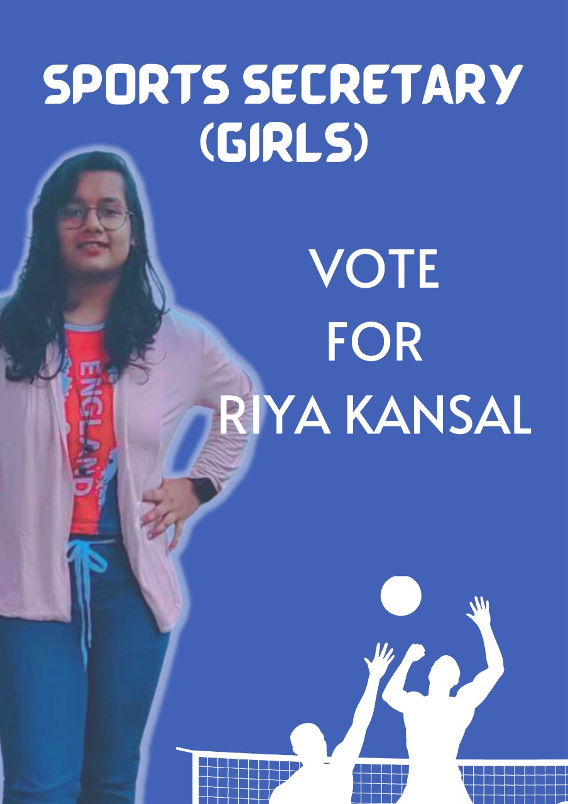
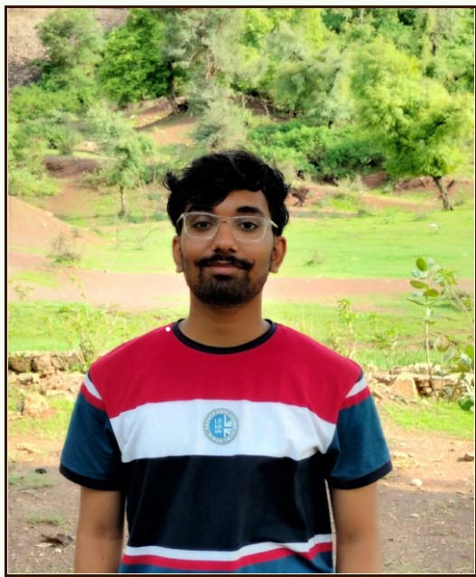
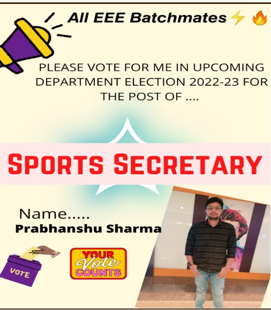

Its been so long studying online without sharing any memories with your friends, I bet you are dying to meet them in offline classes. Many of you want to make new friends or want to strengthen existing friendships.
I say, there is no better way to strengthen existing friendships and create new ones than by sharing a chess board or by exchanging shuttles🏸, by passing a football⚽ or by giving a kho, by cheering when the team is up or by comforting them when the team is down.
My name is PRATHAM SANTOSH GIRI and I am willing to take the responsibility of providing you with the opportunities to make new friends and strengthen the bonds of friendship by organising various sports events in our department.
I will also be taking the responsibility of bringing the best players forward and leading our department to the top in every sports event. So please VOTE ME for the position of SPORTS SECRETARY in upcoming elections.....
I am playing chess since i was 8 years old and participated in various events and tournaments since then. I was also selected for a divisional level chess tournament. I have also played badminton for 4 continuous years on court and participated in many tournaments. Cricket 🏏 is a sport that I love and play almost everyday.
Thank You.
Past Experince :- 1) lichess 2) Badminton(4 years on court) 3) Cricket

Hey ladies and Gentlemen,
This is Riya Kansal , a fitness freak from W section.
I am standing for the post of SPORTS SECRETARY (GIRLS) for the year 2022-23.
Being a District level Basketball myself , I feel that I have the right skill set and knowledge base for being a Sports Secretary.
I have a played a plethora of games myself be it Badminton , lawn tennis etc.
I believe that ‘HEALTH IS WEALTH' and yes you will definitely see me applying this in the college.
I will assure every sports event conducted by me will be one of its kind and one which could not be forget. I will give my all to whichever sports I play and I mean it. IF YOU WANT A SPORTS SECRETARY WHO IS THE BEST,
VOTE FOR RIYA KANSAL TO SORT OUT THE MESS. Won't write more , my actions will speak louder

Hello guys !🙏🏻 I know that we all didn't interact much during our first year as it was online and our sections were different as well . But now, we all are going to study and do all the things mostly together in our department only .👩🏻🎓🧑🏻🎓
Also , sports is one of the important things to keep our department's head up .⚽🏀🏈🏋🏻♂️ I enjoy being involved in functions or tournaments where a person or a team needs their mental as well as physical involvement . 🤸🏻♂️🤸🏻♂️
So I would like it very much if I could involve myself as sports event manager or sports event maker . I would enjoy doing it and you all would for sure enjoy participating in all those tournaments.🤠🤠🤠
I am Chinmay Sharma and I am a sports enthusiast especially football ⚽, I have experienced almost every type of sport and even today also I play football everyday . Also I have played in open state football tournament🤩.
So , I am willing to serve our department for the coming year and I would do my job as perfect as I can so as to get glory for our department in sports🥇🥇🥇 . So please vote me for the position of Secretary(Boys) .🙏🏻🙏🏻🙏🏻
Thanks !

Hello all my batchmates 🙋♂️
Why me as Sports Secretary?? 🤔🧐
🚴I have been associated with cricket🏏 and badminton 🏸from childhood and represented my school team in inter school badminton competitions twice.
🏂I have captained in Inter House Cricket Tournament. I am also actively involved in badminton and play it every weekend.
🏊Currently i am working on improving myself in 400m,800m running.🏃
So i can be a leader who can identify talent with utmost accuracy and lead us to glory